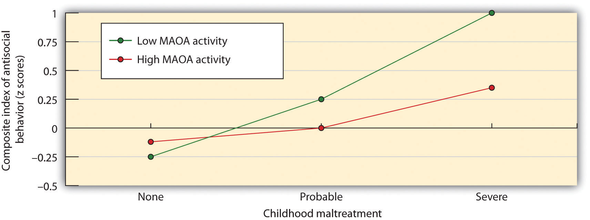
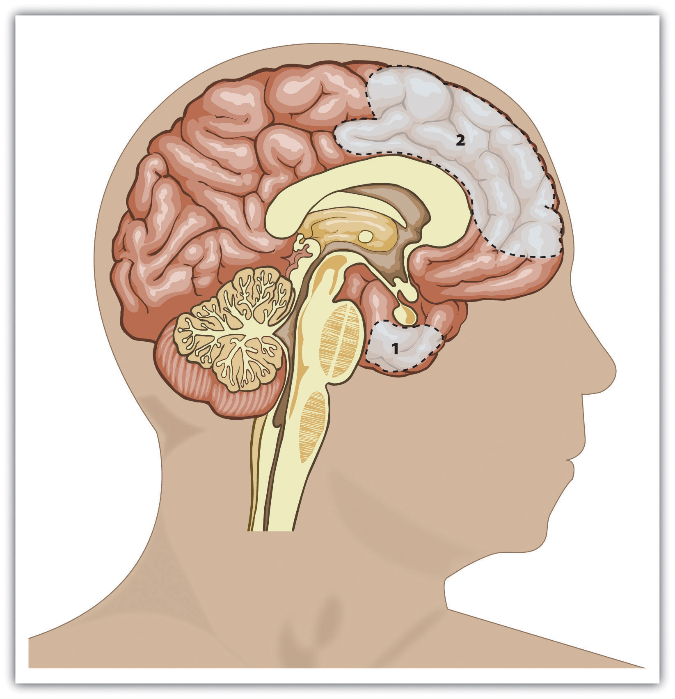
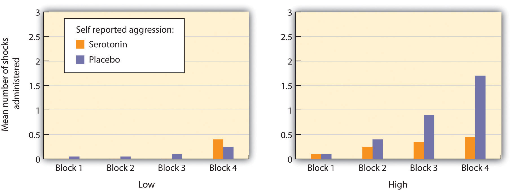
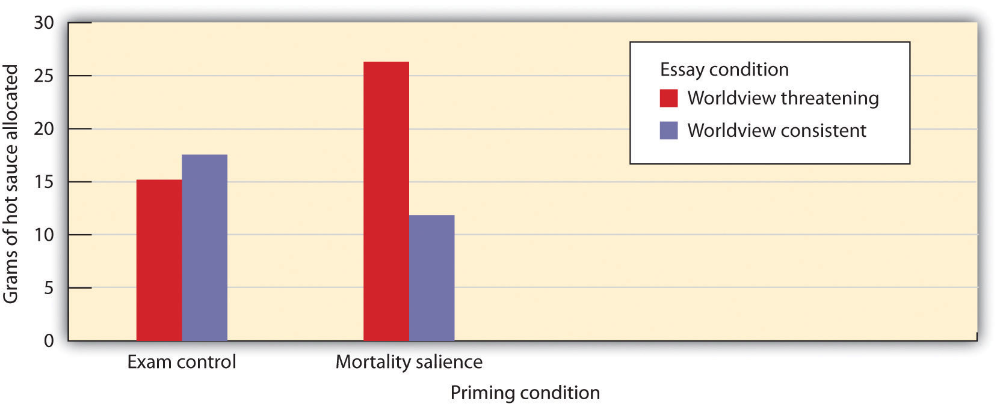

When we see so much violence around us every day, we might conclude that people have an innate tendency, or even an instinct, to be aggressive. Some well-known philosophers and psychologists have argued that this is the case. For instance, the philosopher Thomas Hobbes (1588–1679) took this view, arguing that humans are naturally evil and that only society could constrain their aggressive tendencies. On the other hand, the philosopher Jean-Jacques Rousseau (1712–1778) was more positive. He believed that humans are naturally gentle creatures who are aggressive only because we are taught to be so by our society. The psychologist Sigmund Freud, who lived through the disaster of World War I in which millions of his fellow human beings were massacred, argued that although people do have a “life instinct,” they also have a “death instinct”—an impulse toward destruction of themselves and others.
A belief in the innate aggressive tendencies of human beings—that the ability to be aggressive to others, at least under some circumstances, is part of our fundamental human makeup—is consistent with the principles of evolutionary psychology. After all, the goal of maintaining and enhancing the self will in some cases require that we prevent others from harming us and those we care about. We may aggress against others because it allows us to gain access to valuable resources such as food and desirable mates or to protect ourselves from direct attack by others. And we may aggress when we feel that our social status is threatened. Therefore, if aggression helps in either our individual survival or in the survival of our genes, then the process of natural selection may well cause humans, as it would any other animal, to be aggressive. Human beings need to be able to aggress, and nature has provided us with these skills (Buss & Duntley, 2006).Buss, D. M., & Duntley, J. D. (Eds.). (2006). The evolution of aggression. Madison, CT: Psychosocial Press. Under the right situation, almost all of us will aggress.
However, just because we can aggress does not mean that we will. It is not necessarily evolutionarily adaptive to aggress in all situations. For one, aggressing can be costly if the other person aggresses back. Therefore neither people nor animals are always aggressive. Rather, they use aggression only when they feel that they absolutely need to (Berkowitz, 1993).Berkowitz, L. (1993). Aggression: Its causes, consequences and control. New York, NY: McGraw-Hill. In animals, the fight-or-flight response to threat leads them sometimes to attack and sometimes to flee the situation. Human beings have an even wider variety of potential responses to threat, only one of which is aggression. Again, the social situation is critical. We may react violently in situations in which we are uncomfortable or fearful or when another person has provoked us, but we may react more calmly in other settings. And there are cultural differences, such that violence is more common in some cultures than in others.
There is no doubt that aggression is in part genetically determined. Animals can be bred to be aggressive by breeding the most aggressive offspring with each other (Lagerspetz & Lagerspetz, 1971).Lagerspetz, K. M., & Lagerspetz, K. Y. (1971). Changes in the aggressiveness of mice resulting from selective breeding, learning and social isolation. Scandinavian Journal of Psychology, 12(4), 241–248. Children who are aggressive as infants also are aggressive when they are adults (Coie & Dodge, 1998; Dubow, Huesmann, & Boxer, 2003; Raine, 1993),Coie, J. D., & Dodge, K. A. (1998). Aggression and antisocial behavior. In N. Eisenberg & W. Damon (Eds.), Handbook of child psychology (5th ed., Vol. 3, pp. 779–862). Hoboken, NJ: John Wiley & Sons; Dubow, E. F., Huesmann, L. R., & Boxer, P. (2003). Theoretical and methodological considerations in cross-generational research on parenting and child aggressive behavior. Journal of Abnormal Child Psychology, 31(2), 185–192; Raine, A. (1993). The psychopathology of crime: Criminal behavior as a clinical disorder. San Diego, CA: Academic Press. and identical twins are more similar than fraternal twins in their aggressive tendencies and criminal records. Behavioral genetics studies have found that criminal and aggressive behavior is correlated at about .7 for identical twins but only at about .4 for fraternal twins (Tellegen et al., 1988).Tellegen, A., Lykken, D. T., Bouchard, T. J., Wilcox, K. J., Segal, N. L., & Rich, S. (1988). Personality similarity in twins reared apart and together. Journal of Personality and Social Psychology, 54(6), 1031–1039.
Avsalom Caspi and his colleagues (2002)Caspi, A., McClay, J., Moffitt, T., Mill, J., Martin, J., Craig, I. W.…Poulton, R. (2002). Role of genotype in the cycle of violence in maltreated children. Science, 297(5582), 851–854. found evidence for the person x situation interaction in determining aggression. They focused on the the influence of a particular genetic factor, the monoamine oxidase (MAOA) gene, located on the X chromosome, that produces an enzyme that influences the production of serotoninA neurotransmitter that influences mood, appetite, and sleep and that inhibits aggression., a neurotransmitter that influences mood, appetite, and sleep and that reduces aggression. Supporting the role of genetics in aggression, they found that individuals who had lower levels of activity of this gene were more at risk to show a variety of aggressive behaviors as adults. However, they also found that the genetic factor was only important for children who had also been severely mistreated. This person-by-situation interaction effect is shown in Figure 10.1. Although much more research is needed, it appears that aggressive behavior, like most other behaviors, is affected by an interaction between genetic and environmental variations.
Figure 10.1
Caspi and his colleagues (2002)Caspi, A., McClay, J., Moffitt, T., Mill, J., Martin, J., Craig, I. W.Caspi, A., McClay, J., Moffitt, T., Mill, J., Martin, J., Craig, I. W., et al.#8230;Poulton, R. (2002). Role of genotype in the cycle of violence in maltreated children. Science, 297(5582), 851–854. found evidence for a person-by-situation interaction regarding the role of genetics and parental treatment in aggression. Antisocial behavior and aggression were greater for children who had been severely maltreated, but this effect was even stronger for children with a gene variation that reduced the production of serotonin.
Evolutionary principles suggest that we should be less likely to harm those who are genetically related to us than we are to harm others who are different. And research has supported this finding—for instance, biological parents are much less likely to abuse or murder their own children than stepparents are to harm their stepchildren (Daly & Wilson, 1998, 1999).Daly, M., & Wilson, M. (Eds.). (1998). The evolutionary social psychology of family violence. Mahwah, NJ: Lawrence Erlbaum; Daly, M., & Wilson, M. (Eds.). (1999). An evolutionary psychological perspective on homicide. Thousand Oaks, CA: Sage. In fact, these researchers found that preschool children living with a stepparent or foster parent were many times more likely to be murdered by their parent than were children who lived with both biological parents.
Aggression is controlled in large part by the area in the older part of the brain known as the amygdala (Figure 10.2 "Key Brain Structures Involved in Regulating and Inhibiting Aggression"). The amygdalaThe region in the limbic system that is primarily responsible for regulating our perceptions of, and reactions to, aggression and fear. is a brain region responsible for regulating our perceptions of, and reactions to, aggression and fear. The amygdala has connections with other body systems related to fear, including the sympathetic nervous system, facial responses, the processing of smells, and the release of neurotransmitters related to stress and aggression.
In addition to helping us experience fear, the amygdala also helps us learn from situations that create fear. The amygdala is activated in response to positive outcomes but also to negative ones, and particularly to stimuli that we see as threatening and fear arousing. When we experience events that are dangerous, the amygdala stimulates the brain to remember the details of the situation so that we learn to avoid it in the future. The amygdala is activated when we look at facial expressions of other people experiencing fear or when we are exposed to members of racial outgroups (Morris, Frith, Perrett, & Rowland, 1996; Phelps et al., 2000).Morris, J. S., Frith, C. D., Perrett, D. I., & Rowland, D. (1996). A differential neural response in the human amygdala to fearful and happy facial expressions. Nature, 383(6603), 812–815; Phelps, E. A., O’Connor, K. J., Cunningham, W. A., Funayama, E. S., Gatenby, J. C., Gore, J. C., & Banaji, M. R. (2000). Performance on indirect measures of race evaluation predicts amygdala activation. Journal of Cognitive Neuroscience, 12(5), 729–738.
Although the amygdala helps us perceive and respond to danger, and this may lead us to aggress, other parts of the brain serve to control and inhibit our aggressive tendencies. One mechanism that helps us control our negative emotions and aggression is a neural connection between the amygdala and regions of the prefrontal cortex (Gibson, 2002).Gibson, K. R. (2002). Evolution of human intelligence: The roles of brain size and mental construction. Brain Behavior and Evolution, 59, 10–20.
The prefrontal cortex is in effect a control center for aggression: When it is more highly activated, we are more able to control our aggressive impulses. Research has found that the cerebral cortex is less active in murderers and death row inmates, suggesting that violent crime may be caused at least in part by a failure or reduced ability to regulate emotions (Davidson, Jackson, & Kalin, 2000; Davidson, Putnam, & Larson, 2000).Davidson, R. J., Jackson, D. C., & Kalin, N. H. (2000). Emotion, plasticity, context, and regulation: Perspectives from affective neuroscience. Psychological Bulletin, 126(6), 890–909; Davidson, R. J., Putnam, K. M., & Larson, C. L. (2000). Dysfunction in the neural circuitry of emotion regulation—A possible prelude to violence. Science, 289(5479), 591–594.
Figure 10.2 Key Brain Structures Involved in Regulating and Inhibiting Aggression
Brain regions that influence aggression include the amygdala (area 1) and the prefrontal cortex (area 2). Individual differences in one or more of these regions or in the interconnections among them can increase the propensity for impulsive aggression.
Hormones are also important in creating aggression. Most important in this regard is the male sex hormone testosteroneThe male sex hormone., which is associated with increased aggression in both animals and in humans. Research conducted on a variety of animals has found a strong correlation between levels of testosterone and aggression. This relationship seems to be weaker among humans than among animals, yet it is still significant (Dabbs, Hargrove, & Heusel, 1996).Dabbs, J. M., Jr., Hargrove, M. F., & Heusel, C. (1996). Testosterone differences among college fraternities: Well-behaved vs. rambunctious. Personality and Individual Differences, 20(2), 157–161.
In one study showing the relationship between testosterone and behavior, James Dabbs and his colleagues (Dabbs, Hargrove, & Heusel, 1996)Dabbs, J. M., Jr., Hargrove, M. F., & Heusel, C. (1996). Testosterone differences among college fraternities: Well-behaved vs. rambunctious. Personality and Individual Differences, 20(2), 157–161. measured the testosterone levels of 240 men who were members of 12 fraternities at two universities. They also obtained descriptions of the fraternities from university officials, fraternity officers, yearbook and chapter house photographs, and researcher field notes. The researchers correlated the testosterone levels and the descriptions of each of the fraternities. They found that the fraternities that had the highest average testosterone levels were also more wild and unruly, and in one case were known across campus for the crudeness of their behavior. The fraternities with the lowest average testosterone levels, on the other hand, were more well-behaved, friendly, academically successful, and socially responsible. Another study found that juvenile delinquents and prisoners who have high levels of testosterone also acted more violently (Banks & Dabbs, 1996).Banks, T., & Dabbs, J. M., Jr. (1996). Salivary testosterone and cortisol in delinquent and violent urban subculture. Journal of Social Psychology, 136(1), 49–56. Testosterone affects aggression by influencing the development of various areas of the brain that control aggressive behaviors. The hormone also affects physical development such as muscle strength, body mass, and height that influence our ability to successfully aggress.
Although testosterone levels are much higher in men than in women, the relationship between testosterone and aggression is not limited to males. Studies have also shown a positive relationship between testosterone and aggression and related behaviors (such as competitiveness) in women (Cashdan, 2003).Cashdan, E. (2003). Hormones and competitive aggression in women. Aggressive Behavior, 29(2), 107–115. Although women have lower levels of testosterone overall, they are more influenced by smaller changes in these levels than are men.
It must be kept in mind that the observed relationships between testosterone levels and aggressive behavior that have been found in these studies cannot prove that testosterone causes aggression—the relationships are only correlational. In fact, the effect of aggression on testosterone is probably stronger than the effect of testosterone on aggression. Engaging in aggression causes temporary increases in testosterone. People who feel that they have been insulted show both more aggression as well as more testosterone (Cohen, Nisbett, Bosdle, & Schwarz, 1996),Cohen, D., Nisbett, R. E., Bosdle, B., & Schwarz, N. (1996). Insult, aggression, and the southern culture of honor: An “experimental ethnography.” Journal of Personality and Social Psychology, 70, 945–960. and the experience of stress is also associated with higher levels of testosterone and also with aggression. Even playing an aggressive game, such as tennis or chess, increases the testosterone levels of the winners and decreases the testosterone levels of the losers (Gladue, Boechler, & McCaul, 1989; Mazur, Booth, & Dabbs, 1992).Gladue, B. A., Boechler, M., & McCaul, K. D. (1989). Hormonal response to competition in human males. Aggressive Behavior, 15(6), 409–422; Mazur, A., Booth, A., & Dabbs, J. M. (1992). Testosterone and chess competition. Social Psychology Quarterly, 55(1), 70–77. Perhaps this is why the fans at my university rioted after our team won the basketball championship.
Testosterone is not the only biological factor linked to human aggression. Recent research has found that serotonin is also important, as serotonin tends to inhibit aggression. Low levels of serotonin have been found to predict future aggression (Kruesi, Hibbs, Zahn, & Keysor, 1992; Virkkunen, de Jong, Bartko, & Linnoila, 1989).Kruesi, M. J., Hibbs, E. D., Zahn, T. P., & Keysor, C. S. (1992). A 2-year prospective follow-up study of children and adolescents with disruptive behavior disorders: Prediction by cerebrospinal fluid 5-hydroxyindoleacetic acid, homovanillic acid, and autonomic measures? Archives of General Psychiatry, 49(6), 429–435; Virkkunen, M., de Jong, J., Bartko, J. J., & Linnoila, M. (1989). Psychobiological concomitants of history of suicide attempts among violent offenders and impulsive fire setters. Archives of General Psychiatry, 46(7), 604–606. Violent criminals have lower levels of serotonin than do nonviolent criminals, and criminals convicted of impulsive violent crimes have lower serotonin levels than criminals convicted of premeditated crimes (Virkkunen, Nuutila, Goodwin, & Linnoila, 1987).Virkkunen, M., Nuutila, A., Goodwin, F. K., & Linnoila, M. (1987). Cerebrospinal fluid monoamine metabolite levels in male arsonists. Archives of General Psychiatry, 44(3), 241–247.
In one experiment assessing the influence of serotonin on aggression, Berman, McCloskey, Fanning, Schumacher, and Coccaro (2009)Berman, M. E., McCloskey, M. S., Fanning, J. R., Schumacher, J. A., & Coccaro, E. F. (2009). Serotonin augmentation reduces response to attack in aggressive individuals. Psychological Science, 20(6), 714–720. first chose two groups of participants, one of which indicated that they had frequently engaged in aggression (temper outbursts, physical fighting, verbal aggression, assaults, and aggression toward objects) in the past, and a second group that reported that they had not engaged in aggressive behaviors.
In a laboratory setting, participants from both groups were then randomly assigned to receive either a drug that raises serotonin levels or a placebo. Then the participants completed a competitive task with what they thought was another person in another room. (The opponent’s responses were actually controlled by computer.) During the task, the person who won each trial could punish the loser of the trial by administering electric shocks to the finger. Over the course of the game, the “opponent” kept administering more intense shocks to the participants.
As you can see in Figure 10.3, the participants who had a history of aggression were significantly more likely to retaliate by administering severe shocks to their opponent than were the less aggressive participants. The aggressive participants who had been given serotonin, however, showed significantly reduced aggression levels during the game. Increased levels of serotonin appear to help people and animals inhibit impulsive responses to unpleasant events (Soubrié, 1986).Soubrié, P. (1986). Reconciling the role of central serotonin neurons in human and animal behavior. Behavioral and Brain Sciences, 9(2), 319–335.
Figure 10.3
Participants who reported having engaged in a lot of aggressive behaviors (right panel) showed more aggressive responses in a competitive game than did those who reported being less aggressive (left panel). The aggression levels for the more aggressive participants increased over the course of the experiment for those who did not take a dosage of serotonin but aggression did not significantly increase for those who had taken serotonin. Data are from Berman et al. (2009).Berman, M. E., McCloskey, M. S., Fanning, J. R., Schumacher, J. A., & Coccaro, E. F. (2009). Serotonin augmentation reduces response to attack in aggressive individuals. Psychological Science, 20(6), 714–720.
Perhaps not surprisingly, research has found that the consumption of alcohol increases aggression. In fact, excessive alcohol consumption is involved in a majority of violent crimes, including rape and murder (Abbey, Ross, McDuffie, & McAuslan, 1996).Abbey, A., Ross, L. T., McDuffie, D., & McAuslan, P. (1996). Alcohol and dating risk factors for sexual assault among college women. Psychology of Women Quarterly, 20(1), 147–169. The evidence is very clear, both from correlational research designs and from experiments in which participants are randomly assigned either to ingest or not ingest alcohol, that alcohol increases the likelihood that people will respond aggressively to provocations (Bushman, 1997; Ito, Miller, & Pollock, 1996; Graham, Osgood, Wells, & Stockwell, 2006).Bushman, B. J. (Ed.). (1997). Effects of alcohol on human aggression: Validity of proposed explanations. New York, NY: Plenum Press; Graham, K., Osgood, D. W., Wells, S., & Stockwell, T. (2006). To what extent is intoxication associated with aggression in bars? A multilevel analysis. Journal of Studies on Alcohol, 67(3), 382–390; Ito, T. A., Miller, N., & Pollock, V. E. (1996). Alcohol and aggression: A meta-analysis on the moderating effects of inhibitory cues, triggering events, and self-focused attention. Psychological Bulletin, 120(1), 60–82. Even people who are not normally aggressive may react with aggression when they are intoxicated (Bushman & Cooper, 1990).Bushman, B. J., & Cooper, H. M. (1990). Effects of alcohol on human aggression: An integrative research review. Psychological Bulletin, 107(3), 341–354.
Alcohol increases aggression for a couple of reasons. For one, alcohol disrupts executive functions, which are the cognitive abilities that help us plan, organize, reason, achieve goals, control emotions, and inhibit behavioral tendencies (Séguin & Zelazo, 2005).Séguin, J. R., & Zelazo, P. D. (2005). Executive function in early physical aggression. In R. E. Tremblay, W. W. Hartup, & J. Archer (Eds.), Developmental origins of aggression (pp. 307–329). New York, NY: Guilford Press. Executive functioning occurs in the prefrontal cortex, which is the area that allows us to control aggression. Alcohol therefore reduces the ability of the person who has consumed it to inhibit his or her aggression (Steele & Southwick, 1985).Steele, C. M., & Southwick, L. (1985). Alcohol and social behavior: I. The psychology of drunken excess. Journal of Personality and Social Psychology, 48(1), 18–34. Acute alcohol consumption is more likely to facilitate aggression in people with low, rather than high, executive functioning abilities.
Secondly, when people are intoxicated, they become more self-focused and less aware of the social situation, a state that is known as alcohol myopia. As a result, they are less likely to notice the social constraints that normally prevent them from engaging aggressively and are less likely to use those social constraints to guide them. We might normally notice the presence of a police officer or other people around us, which would remind us that being aggressive is not appropriate, but when we are drunk we are less likely to be so aware. The narrowing of attention that occurs when we are intoxicated also prevents us from being aware of the negative outcomes of our aggression. When we are sober, we realize that being aggressive may produce retaliation as well as cause a host of other problems, but we are less likely to be aware of these potential consequences when we have been drinking (Bushman & Cooper, 1990).Bushman, B. J., & Cooper, H. M. (1990). Effects of alcohol on human aggression: An integrative research review. Psychological Bulletin, 107(3), 341–354.
Alcohol also influences aggression through expectations. If we expect that alcohol will make us more aggressive, then we tend to become more aggressive when we drink. The sight of a bottle of alcohol or an alcohol advertisement increases aggressive thoughts and hostile attributions about others (Bartholow & Heinz, 2006),Bartholow, B. D., & Heinz, A. (2006). Alcohol and aggression without consumption: Alcohol cues, aggressive thoughts, and hostile perception bias. Psychological Science, 17(1), 30–37. and the belief that we have consumed alcohol increases aggression (Bègue et al., 2009).Bègue, L., Subra, B., Arvers, P., Muller, D., Bricout, V., & Zorman, M. (2009). A message in a bottle: Extrapharmacological effects of alcohol on aggression. Journal of Experimental Social Psychology, 45(1), 137–142.
If I were to ask you about the times that you have been aggressive, you probably would tell me that many of them occurred when you were angry, in a bad mood, tired, in pain, sick, or frustrated. And you would be right—we are much more likely to aggress when we are experiencing negative emotions. When we are feeling ill, when we get a poor grade on an exam, or when our car doesn’t start—in short, when we are angry and frustrated in general—we are likely to have many unpleasant thoughts and feelings, and these are likely to lead to violent behavior. Aggression is caused in large part by the negative emotions that we experience as a result of the aversive events that occur to us and by our negative thoughts that accompany them (Berkowitz & Heimer, 1989).Berkowitz, L., & Heimer, K. (1989). On the construction of the anger experience: Aversive events and negative priming in the formation of feelings. In L. Berkowitz (Ed.), Advances in experimental social psychology (Vol. 22, pp. 1–37). San Diego, CA: Academic Press.
One kind of negative affect that increases arousal when we are experiencing it is frustration (Berkowitz, 1989; Dollard, Doob, Miller, Mowrer, & Sears, 1939).Berkowitz, L. (1989). Frustration-aggression hypothesis: Examination and reformulation. Psychological Bulletin, 106(1), 59–73; Dollard, J., Miller, N., & Doob, L. (1939). Frustration and aggression. New Haven, CT: Yale University Press. Frustration occurs when we feel that we are not obtaining the important goals that we have set for ourselves. We get frustrated when our computer crashes while we are writing an important paper, when we feel that our social relationships are not going well, or when our schoolwork is going poorly. How frustrated we feel is also determined in large part through social comparison. If we can make downward comparisons with important others, in which we see ourselves as doing as well or better than they are, then we are less likely to feel frustrated. But when we are forced to make upward comparisons with others, we may feel frustration. When we receive a poorer grade than our classmates received or when we are paid less than our coworkers, this can be frustrating to us.
Although frustration is one cause of the negative affect that can lead to aggression, there are other sources as well. In fact, anything that leads to discomfort or negative emotions can increase aggression. For instance, working in extremely high temperatures is known to increase aggression—when we are hot, we are more aggressive. Griffit and Veitch (1971)Griffit, W., & Veitch, R. (1971). Hot and crowded: Influence of population density and temperature on interpersonal affective behavior. Journal of Personality and Social Psychology, 17(1), 92–98. had students complete questionnaires either in rooms in which the heat was at a normal temperature or in rooms in which the temperature was over 90 degrees Fahrenheit. The students in the latter conditions expressed significantly more hostility.
Hotter temperatures are associated with higher levels of aggression and violence (Anderson, Anderson, Dorr, DeNeve, & Flanagan, 2000).Anderson, C. A., Anderson, K. B., Dorr, N., DeNeve, K. M., & Flanagan, M. (2000). Temperature and aggression. In M. P. Zanna (Ed.), Advances in experimental social psychology (Vol. 32, pp. 63–133). San Diego, CA: Academic Press. Hotter regions generally have higher violent crime rates than cooler regions, and violent crime is greater on hot days than it is on cooler days, and during hotter years than during cooler years (Bushman, Wang, & Anderson, 2005).Bushman, B. J., Wang, M. C., & Anderson, C. A. (2005). Is the curve relating temperature to aggression linear or curvilinear? Assaults and temperature in Minneapolis reexamined. Journal of Personality and Social Psychology, 89(1), 62–66. Even the number of baseball batters hit by pitches is higher when the temperature at the game is higher (Reifman, Larrick, & Fein, 1991).Reifman, A. S., Larrick, R. P., & Fein, S. (1991). Temper and temperature on the diamond: The heat-aggression relationship in major league baseball. Personality and Social Psychology Bulletin, 17(5), 580–585. Researchers who study the relationship between heat and aggression have proposed that global warming is likely to produce even more violence (Anderson & Delisi, 2011).Anderson, C. A., & DeLisi, M. (2011). Implications of global climate change for violence in developed and developing countries. In J. Forgas, A. Kruglanski, & K. Williams (Eds.), Social conflict and aggression. New York, NY: Psychology Press. Pain also increases aggression. Berkowitz (1993)Berkowitz, L. (1993). Pain and aggression: Some findings and implications. Motivation and Emotion, 17(3), 277–293. reported a study in which participants were made to feel pain by placing their hands in a bucket of ice-cold water, and it was found that this source of pain also increased subsequent aggression.
The Effects of Provocation and Fear of Death on Aggression
McGregor et al. (1998)McGregor, H. A., Lieberman, J. D., Greenberg, J., Solomon, S., Arndt, J., Simon, L., & Pyszczynski, T. (1998). Terror management and aggression: Evidence that mortality salience motivates aggression against worldview-threatening others. Journal of Personality and Social Psychology, 74(3), 590–605. demonstrated that people who have been provoked by others may be particularly aggressive if they are also experiencing negative emotions about the fear of their own death. The participants in the study had been selected, on the basis of prior reporting, to have either politically liberal or politically conservative views. When they arrived at the lab they were asked to write a short paragraph describing their opinion of politics in the United States. In addition, half of the participants (the mortality salient condition) were asked to “briefly describe the emotions that the thought of your own death arouses in you” and to “Jot down as specifically as you can, what you think will happen to you as you physically die, and once you are physically dead.” Participants in the exam control condition also thought about a negative event, but not one associated with a fear of death. They were instructed to “Please briefly describe the emotions that the thought of your next important exam arouses in you’’ and to “Jot down as specifically as you can, what you think will happen to you as you physically take your next exam, and once you are physically taking your next exam.”
Then the participants read an essay that had supposedly just been written by another person in the study. (The other person did not exist, but the participants didn’t know this until the end of the experiment.) The essay that the participants read had been prepared by the experimenters to condemn politically liberal views or to condemn politically conservative views. Thus one-half of the participants were provoked by the other person by reading a statement that strongly conflicted with their own political beliefs, whereas the other half read an essay that supported their (liberal or conservative) beliefs.
At this point the participants moved on to what they thought was a completely separate study in which they were to be tasting and giving their impression of some foods. Furthermore, they were told that it was necessary for the participants in the research to administer the food samples to each other. The participants then found out that the food they were going to be sampling was spicy hot sauce and that they were going to be administering the sauce to the same person whose essay they had just read! In addition, the participants read some information about the other person that indicated that the other person very much disliked eating spicy food. Participants were given a taste of the hot sauce (which was very hot) and then instructed to place a quantity of it into a cup for the other person to sample. Furthermore, they were told that the other person had to eat all the sauce.
As you can see in Figure 10.4 "Mortality Salience and Aggression", this research provides another example of how negative feelings can lead us to be aggressive after we have been provoked. The threatening essay had little effect on the participants in the exam control condition. On the other hand, the participants who were both provoked by the other person and who had also been reminded of their own death administered significantly more aggression than did the participants in the other three conditions.
Figure 10.4 Mortality Salience and AggressionMcGregor, H. A., Lieberman, J. D., Greenberg, J., Solomon, S., Arndt, J., Simon, L., & Pyszczynski, T. (1998). Terror management and aggression: Evidence that mortality salience motivates aggression against worldview-threatening others. Journal of Personality and Social Psychology, 74(3), 590–605.
A threat to one’s worldview increased aggression but only for participants who had been thinking about their own death. Data are from McGregor et al. (1998).
Just as negative feelings can increase aggression, positive affect can reduce it. In one study (Baron & Ball, 1974),Baron, R. A., & Ball, R. L. (1974). The aggression-inhibiting influence of nonhostile humor. Journal of Experimental Social Psychology, 10(1), 23–33. participants were first provoked by an experimental confederate. Then the participants were, according to random assignment, shown either funny cartoons or neutral pictures. When the participants were given an opportunity to retaliate by giving shocks as part of an experiment on learning, those who had seen the positive cartoons gave fewer shocks than those who had seen the neutral pictures.
It seems that feeling good about ourselves, or feeling good about others, is incompatible with anger and aggression. You can see that this is in essence the flip side of the results we discussed in Chapter 9 "Helping and Altruism" regarding altruism: Just as feeling bad leads us to aggress, feeling good makes us more likely to help and less likely to hurt others. This makes perfect sense, of course, since emotions are signals regarding the threat level around us. When we feel good, we feel safe and do not think that we need to aggress.
Of course, negative emotions do not always lead to aggression toward the source of our frustration. If we get a bad grade from our teacher or a ticket from a police officer, it is not likely that we will directly aggress against him or her. Rather, we may displace our aggression onto others, and particularly toward others who seem similar to the source of our frustration (Miller, Pedersen, Earleywine, & Pollock, 2003).Miller, N., Pedersen, W. C., Earleywine, M., & Pollock, V. E. (2003). A theoretical model of triggered displaced aggression. Personality and Social Psychology Review, 7(1), 75–97. Displaced aggressionAggression that occurs when negative emotions caused by one person trigger aggression toward a different person. occurs when negative emotions caused by one person trigger aggression toward a different person. A recent meta-analysis has found clear evidence that people who are provoked but are unable to retaliate against the person who provoked them are more aggressive toward an innocent other person, and particularly toward people who are similar in appearance to the true source of the provocation, in comparison to those who were not previously provoked (Marcus-Newhall, Pedersen, Carlson, & Miller, 2000).Marcus-Newhall, A., Pedersen, W. C., Carlson, M., & Miller, N. (2000). Displaced aggression is alive and well: A meta-analytic review. Journal of Personality and Social Psychology, 78(4), 670–689.
It is clear that negative affect increases aggression. And you will recall that emotions that are accompanied by high arousal are more intense than those that have only low levels of arousal. Thus it would be expected that aggression is more likely to occur when we are more highly aroused, and indeed this is the case. For instance, in his important research on arousal, Dolf Zillmann (Zillman, Hoyt, & Day, 1974; Zillman, Katcher, & Milavsky, 1972)Zillman, D., Hoyt, J. L., & Day, K. D. (1974). Strength and duration of the effect of aggressive, violent, and erotic communications on subsequent aggressive behavior. Communication Research, 1(3), 286–306; Zillman, D., Katcher, A. H., & Milavsky, B. (1972). Excitation transfer from physical exercise to subsequent aggressive behavior. Journal of Experimental Social Psychology, 8(3), 247–259. found that many types of stimuli that created arousal, including riding on a bicycle, listening to an erotic story, and experiencing loud noises, tended to increase both arousal as well as aggression. Arousal probably has its effects on aggression in part through the misattribution of emotion. If we are experiencing arousal that was actually caused by a loud noise or by any other cause, we might misattribute that arousal as anger toward someone who has recently frustrated or provoked us.
We have seen that when we are experiencing strong negative emotions accompanied by arousal, such as when we are frustrated, angry, or uncomfortable, or anxious about our own death, we may be more likely to aggress. However, if we are aware that we are feeling these negative emotions, we might try to find a solution to prevent ourselves from lashing out at others. Perhaps, we might think, if we can release our negative emotions in a relatively harmless way, then the probability that we will aggress might decrease. Maybe you have tried this method. Have you ever tried to yell really loud, hit a pillow, or kick something when you are angry, with the hopes that doing so will release your aggressive tendencies?
The idea that engaging in less harmful aggressive actions will reduce the tendency to aggress later in a more harmful way, known as catharsisThe idea that engaging in less harmful aggressive actions will reduce the tendency to aggress later in a more harmful way., is an old one. It was mentioned as a way of decreasing violence by the Greek philosopher Aristotle and was an important part of the theories of Sigmund Freud. Many others believe in catharsis too. Russell, Arms, and Bibby (1995)Russell, G. W., Arms, R. L., & Bibby, R. W. (1995). Canadians’ beliefs in catharsis. Social Behavior and Personality, 23(3), 223–228. reported that more than two-thirds of the people they surveyed believed in catharsis, agreeing with statements that suggested that participating in and observing aggressive sports and other aggressive activities is a good way to get rid of one’s aggressive urges. People who believe in the value of catharsis use it because they think that doing so is going to make them feel better (Bushman, Baumeister, & Phillips, 2001).Bushman, B. J., Baumeister, R. F., & Phillips, C. M. (2001). Do people aggress to improve their mood? Catharsis beliefs, affect regulation opportunity, and aggressive responding. Journal of Personality and Social Psychology, 81(1), 17–32. The belief in catharsis leads people to engage in popular techniques such as venting and cathartic therapies, even though numerous studies have shown that these approaches are not effective.
It is true that reducing negative affect and arousal can reduce the likelihood of aggression. For instance, if we are able to distract ourselves from our negative emotions or our frustration by doing something else, rather than ruminating on it, we can feel better and will be less likely to aggress. However, as far as social psychologists have been able to determine, attempting to remove negative emotions by engaging in or observing aggressive behaviors (that is, the idea of catharsis) simply does not work.
In one relevant study, Bushman, Baumeister, and Stack (1999)Bushman, B. J., Baumeister, R. F., & Stack, A. D. (1999). Catharsis, aggression, and persuasive influence: Self-fulfilling or self-defeating prophecies? Journal of Personality and Social Psychology, 76(3), 367–376. first had their participants write an article about their opinions about a social topic such as abortion. Then they convinced them that another participant had read the article and provided very negative feedback about it. The other person said such things as, “This is one of the worst essays I have read!” Then the participants read a message suggesting that catharsis really did work. (It claimed that engaging in aggressive action is a good way to relax and reduce anger.) At this point half of the participants were allowed to engage in a cathartic behavior—they were given boxing gloves, some instructions about boxing, and then got a chance to hit a punching bag for two minutes.
Then all the participants got a chance to engage in aggression with the same person who had angered them earlier. The participant and the partner played a game in which the losing person on each trial received a blast of noise. At the beginning of each trial each participant was permitted to set the intensity of the noise that the other person would receive if he or she lost the trial, as well as the duration of the loser’s suffering, because the duration of the noise depended on how long the winner pressed the button.
Contrary to the catharsis hypothesis, the students who punched the punching bag did not release and reduce their aggression as the message they had read suggested would happen. Rather, these students actually set a higher noise level and delivered longer bursts of noise than did the participants who did not get a chance to hit the punching bag. It seems that if we hit a punching bag, punch a pillow, or scream as loud as we can, with the idea of releasing our frustration, the opposite occurs—rather than decreasing aggression, these behaviors in fact increase it (Bushman et al., 1999).Bushman, B. J., Baumeister, R. F., & Stack, A. D. (1999). Catharsis, aggression, and persuasive influence: Self-fulfilling or self-defeating prophecies? Journal of Personality and Social Psychology, 76(3), 367–376. Participating in aggression simply makes us more, not less, aggressive.
One prediction that could be derived from the catharsis idea is that countries that are currently fighting wars would show less domestic aggression than those that are not. After all, the citizens in these countries read about the war in the newspapers and see images of it on TV on a regular basis—wouldn’t that reduce their needs and desires to aggress in other ways? Again, the answer is no. Rather than decreasing, aggression increases when the country that one lives in is currently or recently fighting a war. In an archival study, Archer and Gartner (1976)Archer, D., & Gartner, R. (1976). Violent acts and violent times: A comparative approach to postwar homicide rates. American Sociological Review, 41(6), 937–963. found that countries that were in wars experienced significant postwar increases in their rates of homicide. These increases were large in magnitude, occurred after both large wars and smaller wars, with several types of homicide rate indicators, in victorious as well as defeated nations, in nations with both improved and worsened postwar economies, among both men and women offenders, and among offenders of several age groups. Homicide rate increases occurred with particular consistency among nations with large numbers of combat deaths.
The increases in aggression that follow from engaging in aggressive behavior are not unexpected—and they occur for a variety of reasons. For one, engaging in a behavior that relates to violence, such as punching a pillow, increases our arousal. Furthermore, if we enjoy engaging in the aggressive behavior, we may be rewarded, making us more likely to engage in it again. And aggression reminds us of the possibility of being aggressive in response to our frustrations. In sum, relying on catharsis by engaging in or viewing aggression is dangerous behavior—it is more likely to increase the flames of aggression than to put them out. It is better to simply let the frustration dissipate over time or perhaps to engage in other nonviolent but distracting activities.